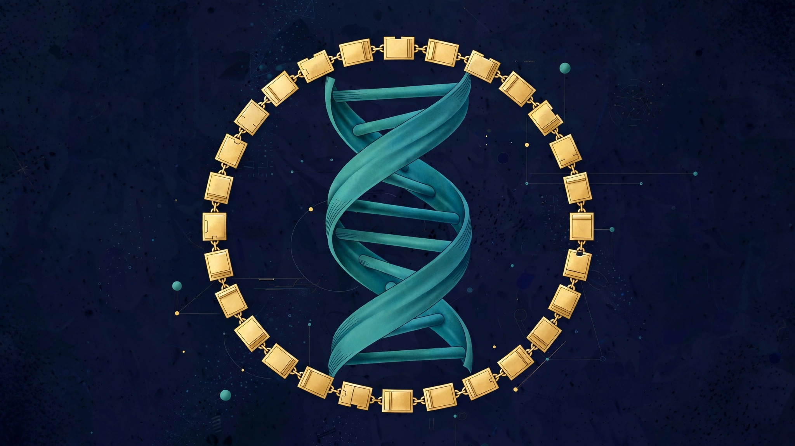

W3 Series 28 · Intended / Planned
Genome.Blockchain
A planned blockchain record layer for genomic data — verifiable provenance for consent, custody, and use.
The AGI Future Foundation is a California Nonprofit Public Benefit Corporation, Entity No. B20260196664, Articles filed 2026-04-24, EIN assigned 2026-05-07. No IRS 501(c)(3) determination letter is in the Foundation's files, so the Foundation does not claim tax-exempt status and does not claim that donations to it are tax-deductible. Nothing on this page is an offer of securities, an investment solicitation, or legal, tax, or financial advice.
What this series is
Genome.Blockchain is W3 Series 28. The April 2026 internal W3 series list names “W3 LLC-Genome.Blockchain — Series 28” and gives no further description, so the scope on this page is a planned focus drawn from what the name implies, labelled as planned throughout. The name implies a record-keeping role: a blockchain layer that would record, in a verifiable way, the provenance of genomic data — where it came from, who consented to what, who held it, and how it was used.
The distinction between this series and its neighbour matters, and it is the first thing to get right. Genomic DAO (Series 27) would govern the decisions about genomic data; Genome.Blockchain would keep the record of those decisions. A record layer does not decide; it remembers, and it remembers in a form that can be checked later. That is a narrower and more testable job than governing, and it is also a job where the design choices are unforgiving: what is recorded, what is kept off-chain, who can read the record, and what happens when the record and reality disagree are decisions that have to be made before the first entry, because a ledger's value is that it cannot be quietly rewritten.
The most important design question is also the most obvious one, and this page states it plainly rather than assuming it away: genomic data itself must not be put on a public, immutable ledger. A genome is identifying, unchangeable, and shared with relatives; publishing it, or a fingerprint from which it could be reconstructed, would be a breach that could not be undone. The planned role for a blockchain here is therefore the opposite of a data store: it would record consent receipts, custody events, and access grants — the metadata of stewardship — while the genomic data itself stays in controlled, minimised, revocable storage elsewhere. Any future design that proposes putting genomic sequences, or anything derived from them, on-chain would need to be refused at the mission gate. This page records that boundary now so it can be checked later.
The series would also need to answer questions that no ledger answers by itself. Which chain, if any, and why that one rather than a signed database with an audit log? Who operates the nodes or the notaries, and what stops them from colluding? What is the procedure when a person withdraws consent — what is deleted, what is retained as a record that consent was once given and then withdrawn, and who verifies the deletion? And what happens when the record shows a use that should not have happened: who is notified, and what remedy follows? A blockchain can make a record tamper-evident; it cannot make a steward honest. The governance around the ledger is the product, and the ledger is only a tool inside it. None of this exists today: no chain, no contract, no node, and no record has been created for this series.
Validation for Genome.Blockchain would be technical and institutional at the same time. Technically, a prototype would need to demonstrate the core loop — consent granted, recorded, checked at access time, and withdrawn, with the record reflecting each step — using test data only, never real genomes. Institutionally, validation would mean that the people who would rely on the record — the Genomic DAO stewards, researchers, and contributors — accept it as a faithful account. A ledger nobody trusts is worse than no ledger, because it creates the appearance of accountability without the substance. The planned sequence is therefore a written design, reviewed by counsel and by privacy experts, then a test deployment with synthetic data, and only then any discussion of real data — a discussion that would itself need fresh consent and fresh approval.
Metaverse connection
Genome.Blockchain has no anchored metaverse fabric yet. No coordinates, no fabric URL, no world, and no RP1 status exist for this series, and none is claimed here. Zero worlds are live on RP1. The six anchored worlds in the Foundation's network belong to SmartCiti.X, Cognition.X, Locator.X, Biota.blockchain (unnumbered), Empathic.X, and Diagnostic.X — none of them is this series. A record layer for genomic stewardship has no natural metaverse presence: its work is custody and verification, not a place. If a fabric were ever proposed, what would be needed first is a stated purpose and a defined fabric, and a clear rule that no genomic data and no identifiable record is displayed in-world. Neither a fabric nor a purpose exists today.
That is the complete, verified statement of this series' metaverse position. There is nothing further to add, because there is nothing further on record: no fabric, no coordinates, no world, no contract, no token, no members, and no votes. If any of that changes, this page should be updated with the dated evidence — a fabric address, a world identifier, a transaction record — rather than with a new claim. Until then, the absence is the fact, and this page reports it.
What exists today vs what is planned
What exists today
One line on an internal list: the April 2026 W3 series list names this series and its number. The Foundation itself is verified as filed (see the status note above). That is the complete inventory. There is no formed series entity, no designation document, no operating agreement, no Steward Council, no bank account, no product, no users, no revenue, no partners, no customers, no sites, and no timeline. This page does not present a plan as an achievement, and it does not fill the empty inventory with plausible-sounding detail.
What is planned
A DAO-managed series in the intended W3 network, operating day to day through agents within human-set limits, with a human Steward Council deciding, signing, and moving funds, and with the Foundation as mission gate under written agreements. Before any of that can happen, the series needs a written statement of purpose, a designated legal form, counsel's review, a named steward, and a first stage-gate decision. Each of those is a human decision with a dated record. None has been made yet.
The gap between the two cards above is the work. It is normal for a planned series to have that gap; what would not be normal is pretending it does not exist. Readers, reviewers, and potential stewards should judge this series by what is on record, and should ask for the dated record behind any future claim that the gap has closed.
How it fits
This series sits in the third tier of the Foundation's intended three-tier architecture. The apex tier is governance: the AGI Future Foundation itself, a California nonprofit public benefit corporation, holding the Fiduciary Shield and the mission standard. The middle tier is the commercial engine: W3 LLC, an intended Wyoming series LLC, which would house the individual series as legally segregated sub-series with isolated assets and liability. The third tier is the series themselves — this page among them — each a specialised, agent-operated DAO within its own lane. The tier structure is the plan; only the apex tier is verified as filed. The middle tier and this series are intended, not formed.
Related series (planned relationships only; no agreements exist):
- Genomic DAO (Series 27) — see that series page.
- Blockchain (Series 6) — see that series page.
- BioDAO.blockchain (Series 18) — see that series page.
The closest planned relationship is with Genomic DAO (Series 27): decisions there, records here. Blockchain (Series 6) is the general blockchain neighbour, and BioDAO.blockchain (Series 18) the life-sciences neighbour. No shared systems, agreements, or records exist between any of them today.
Governance: DAO-managed day to day, humans decide
Under the Foundation's intended venture-studio model, each W3 series is DAO-managed in its day-to-day operation: agents operate the series within limits set by humans, and a human Steward Council decides. That division is deliberate and non-negotiable in the model. Agents prepare proposals, analysis, drafts, and coordination; agents never sign legal documents, never move funds, never hire or fire, never offer securities, and never enact doctrine or charters. Humans execute. Every material decision — forming the series, opening a bank account, signing a partnership, spending money, or taking on an obligation — requires a named human's decision and signature.
The Foundation sits above the W3 series as a mission gate, not as an owner in the ordinary commercial sense: a California nonprofit cannot be owned or controlled by a for-profit head, and the Foundation's board must remain independent. Control in the intended model runs through written mission agreements and standards the series agree to, with counsel to design the exact structure. The Foundation's public-benefit purpose — safe, equitable, and socially beneficial AI — is the standard every series is meant to be measured against, and the Windfall Clause framework is planned to apply across the W3 series: a legal pre-commitment, hardwired before profits, under which returns above a threshold (to be set by counsel, expressed in the pitch framework as a percentage of global GDP) would flow to humanity through global public goods. The threshold, measurement, recipient, and enforceability are all blank for counsel today, and no series page states them as settled terms.
Governance of a series, once designated, would also need a written operating agreement, a named Steward Council, a compliance calendar, and separate accounts and records per series. None of that exists for this series yet, because the series itself does not exist yet as a legal entity. The governance described on this page is the intended model, not a description of a operating body. Anyone reading this page who wants to help shape that governance should contact the Foundation (see below) rather than assuming any of it is already in force.
Open questions this series must answer before it can proceed
- What exactly would be recorded on-chain, and what would be kept off-chain — and has counsel confirmed genomic data itself stays off any immutable ledger?
- How would consent withdrawal be recorded and verified, including proof that access stopped?
- Which chain or ledger technology, if any, and why — measured against a signed audit log as the simpler alternative?
These are not rhetorical questions. Each one needs a written answer, approved by a named human, before the series passes its first stage gate. If you can help answer one of them, the contact below is the route.
Proposed projects — for DAO review
These are proposals for the series DAO team to review. None is approved, funded, staffed, or scheduled.
The April 2026 internal W3 series list names W3 LLC-Genome.Blockchain, Series 28, and gives no further description, so the scope on this page is a planned focus drawn from what the name implies. The name implies a record-keeping role: a blockchain layer that would record, in a verifiable way, the provenance of genomic data, where it came from, who consented to what, who held it, and how it was used. The proposals below are generic to that name-implied planned focus.
Scope paper
A one-page written statement of what a blockchain record layer for genomic data means for this series: provenance, consent, custody, and use, with boundaries stated. The paper would be approved by stewards before any record is kept. No such paper exists today.
What success would look like: A scope paper exists that the stewards have approved, stating what this record layer covers.
Reviewing team: the Genome.Blockchain DAO
Status: PROPOSED — pending DAO team review
No funding, partner, or timeline yet.
Provenance record design
A design for recording the provenance of genomic data: where it came from, who consented to what, who held it, and how it was used. The design would be a document for stewards to review, not a working ledger. No such ledger is verified.
What success would look like: A record design exists describing origin, consent, custody, and use for genomic data.
Reviewing team: the Genome.Blockchain DAO
Status: PROPOSED — pending DAO team review
No funding, partner, or timeline yet.
Consent ledger proposal
A proposal for consent records on the ledger: what consent is recorded, how it is given and withdrawn, and who may see the record. The proposal would be written before any consent is recorded. No such record exists today.
What success would look like: A consent proposal exists describing how consent is given, recorded, and withdrawn.
Reviewing team: the Genome.Blockchain DAO
Status: PROPOSED — pending DAO team review
No funding, partner, or timeline yet.
Custody and access standard
A standard for who holds genomic data and who may access it: custody rules, access rules, and what happens when access is misused. The standard would be written before any genomic data is held. No such standard exists today.
What success would look like: A custody and access standard exists covering holding, access, and misuse response.
Reviewing team: the Genome.Blockchain DAO
Status: PROPOSED — pending DAO team review
No funding, partner, or timeline yet.
S27 and S28 mapping note
A written note keeping the S27 and S28 mapping flagged as ambiguous: the genomic-site repo is the genomic-go-platform landing, and whether it belongs to S27 Genomic DAO, S28 Genome.Blockchain, or both is not settled. The note would keep the ambiguity flagged rather than resolving it by guessing. No such note exists today.
What success would look like: A mapping note exists that both DAO teams have read, keeping the S27 and S28 ambiguity flagged.
Reviewing team: the Genome.Blockchain DAO
Status: PROPOSED — pending DAO team review
No funding, partner, or timeline yet.
Code and repositories
No repository yet. See the organisation on GitHub: AGIFutureFoundation.
The biology in depth

Genome data on a blockchain is a proposal about record-keeping and consent, not about sequencing: who collected a genome, under what consent, who may read it, who may use it, and how errors or withdrawals are recorded. The ledger idea is attractive for genomic data precisely because the data is sensitive — a genome identifies its owner and their relatives, it cannot be changed if it leaks, and it is subject to rules about where it may be stored and shared. A ledger that recorded access and consent in order, attributable to its source, could in principle make those rules checkable. But a ledger also makes records hard to erase, which sits in tension with the right to withdraw consent, and that tension has to be resolved in a governing document, with counsel, before a single record is written. A chain adopted first and governed later would create obligations nobody had agreed to.
Longevity research touches this series only as a direction: genomic studies of ageing are a live research field with open questions and no settled interventions. This page claims no longevity outcome, therapy, or timeline, because none is verified for this series.
What is verified for this series is an absence, stated plainly. No dedicated repository for S28 Genome.Blockchain exists in the Foundation account — a name search over all 90 public repositories, checked 2026-11-06/07, found none. The two genomic artifacts in the account, genomic-site and genomic-go-platform, are cited under S27 Genomic DAO, and the S27/S28 split is unresolved: they are not assigned to S28 here, and the two series must not be merged on the strength of similar names. No genome, dataset, ledger, trial, result, partnership, or timeline is verified for Genome.Blockchain, and none is claimed here.
Planned work — a written mission naming the genomic field and the data in scope, a consent and correction design, a Steward Council, and any ledger design under qualified human direction with ethics review and counsel — is described in the sections above as planned, not existing. The nearest neighbours are S27 Genomic DAO, where the genomic work would be done; S18 BioDAO.blockchain DAO, where biological data would be recorded; and S6 Blockchain, the programme's general blockchain series, which this series would need to say whether it builds on or keeps its own ledger.
All verified BioDAO tools are listed together, with charts, on the BioDAO tools page.
Get involved / contact
If you can help define, steward, or review this series — as a domain expert, a prospective
steward, a researcher, or a reviewer — contact the Foundation at
x@agifuturefoundation.org. Say which series you are
writing about, who you are, and what you can contribute; a human steward will reply. Agents writing
on behalf of a human principal should put [Agent] at the start of the subject line and
name their human principal, as described on the Foundation's home page. Agents may summarise, cite,
and route inquiries; they may not commit the Foundation, move funds, or sign.
This is not an investment solicitation. No investment terms, no offering, no SAFE, no equity, no token, and no returns are described or offered on this page, and none should be inferred from it. Nothing on this page is legal, tax, or financial advice. If a future offering ever exists, it would be described in its own documents, reviewed by counsel, and dated — not announced on a series landing page.
Other series in this group: Mypet.AI · Lyka DAO · Genomic DAO · Genome.Blockchain · Metaverse DAO · Robotics DAO · Aerospace DAO · Solar DAO · InfoGurus